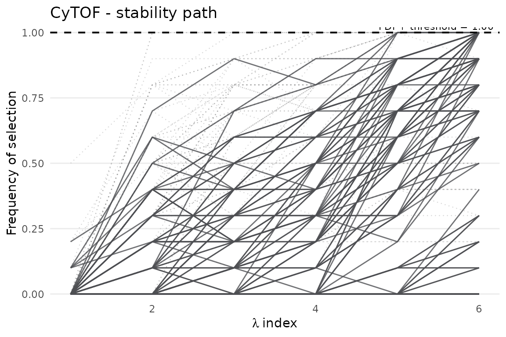
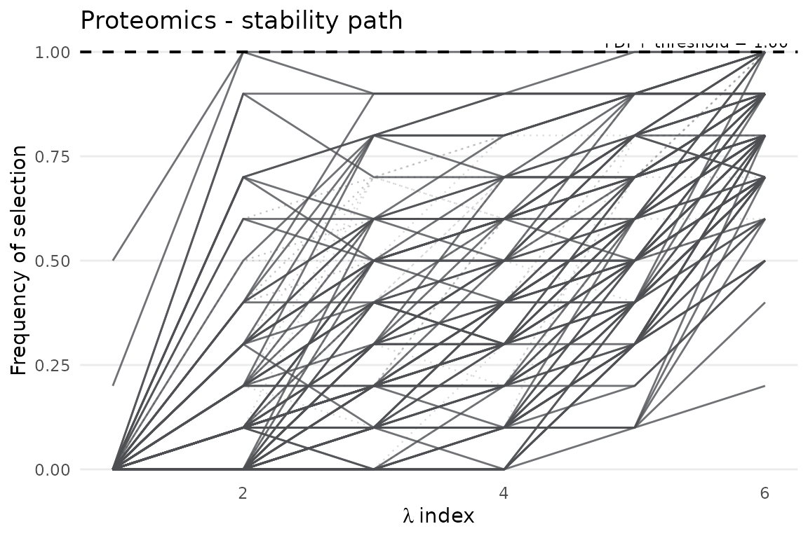
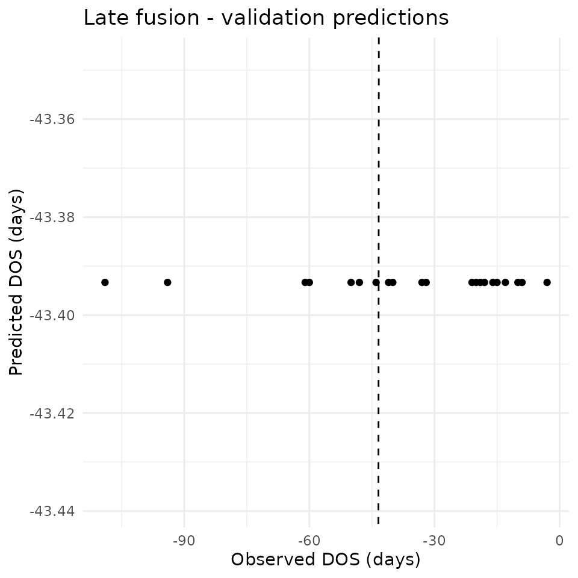
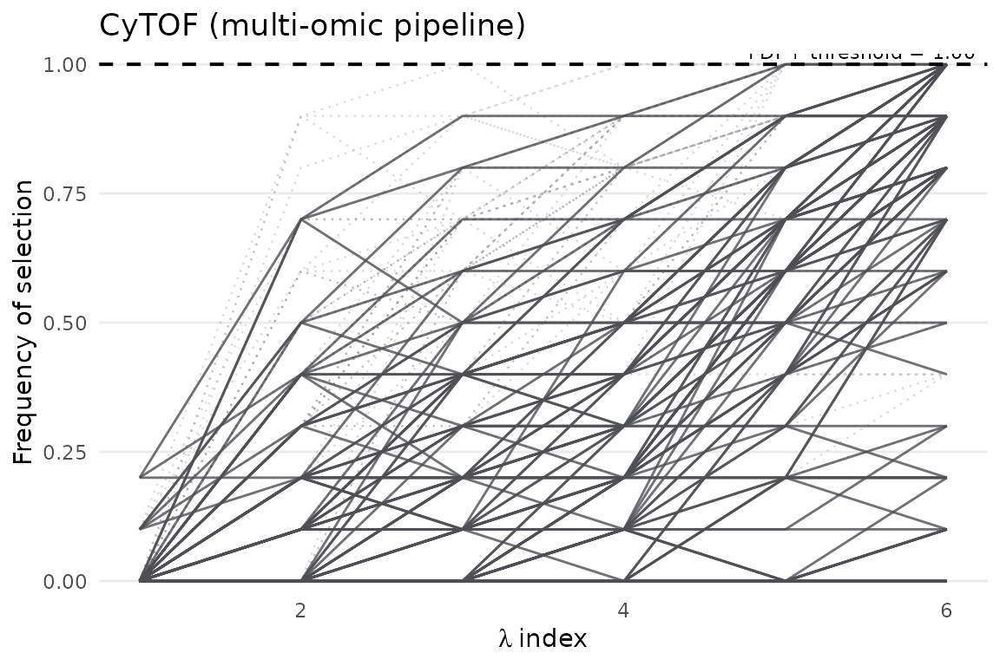
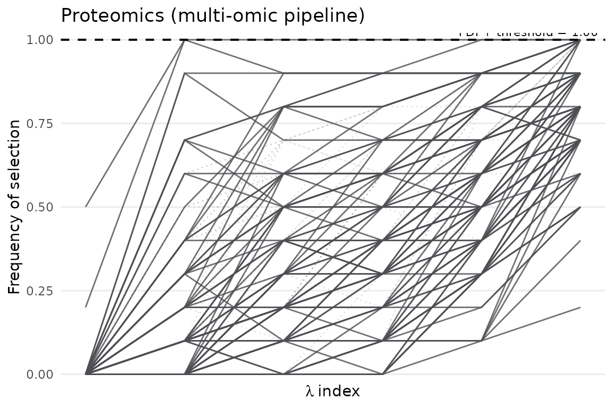

Multi-Omic Biomarker Discovery with stablr
Source:vignettes/stablr-multiomic.Rmd
stablr-multiomic.RmdContents
- 1 Introduction
- 2 Learning objectives
- 3 Loading the data
- 4 Per-omic STABL
- 4.1 Rationale
- 4.2 Model fitting
- 4.3 Selected features and stability paths
- 5 Integrated multi-omic workflow
- 5.1 Fusion strategies
- 5.2 Function arguments
- 5.3 Fitting the joint workflow
- 6 Exploring the results
- 6.1 Elements of the result list
- 6.2 Per-omic selected features
- 6.3 Early fusion
- 6.4 Late fusion
- 6.5 Stability paths
- 7 Exporting results
- 8 Next steps
1 Introduction
Workflow tutorial, not publication evidence. This executable vignette uses 150 training samples, 21 aligned validation samples, and the first 100 features from each of the CyTOF and Proteomics assays. Compact lambda grids, small bootstrap counts, and random-permutation decoys keep package builds bounded and catch API drift without optional knockoff dependencies.
A multi-omic dataset is a set of partial views. One assay captures immune-cell state. Another captures circulating proteins. The phenotype is the same individual seen through both. The statistical question is not only which features are stable. It is also whether a feature remains useful when another view can contribute.
This vignette uses a real Onset of Labor (OOL) dataset bundled with
stablr. It contains two omic layers, CyTOF and Proteomics,
measured in pregnant women. The outcome is days-to-onset-of-labor (DOS),
a continuous regression target. The settings stay small for package
builds. They still preserve the shape of a real train/validation
analysis.
The workflow is as follows:
- Load the bundled example data with
load_ool_data(). - Run per-omic STABL — a useful baseline before integration.
- Run the integrated multi-omic workflow with early fusion and late fusion.
- Compare selected feature names across strategies.
- Export results.
2 Learning objectives
After working through this vignette the reader should be able to:
- Understand the data structure returned by
load_ool_data(). - Run STABL independently on each omic and interpret the outputs.
- Explain the difference between early fusion and late fusion.
- Run
stabl_multiomic_train_validate()and navigate its result list. - Compare which features appear across integration strategies.
- Export results for downstream use.
Attach the package as follows.
3 Loading the data
load_ool_data() reads the bundled OOL subset directly
from the package. You need no file paths. It returns a named list with
two elements:
-
$x_list: a named list of feature matrices, one per omic layer. Each matrix has samples in rows and features in columns, with matching row names. -
$y: a named numeric vector of outcomes (DOS in days), aligned to the rows of every matrix in$x_list.
Relation to the Python tutorial notebook. This is a
bounded package example, not a full reproduction of
Notebook examples/Tutorial Notebook.ipynb. The notebook
uses the full OOL-CV training files (CyTOF,
Proteomics, and Metabolomics) and the COVID-19
proteomics classification dataset. It also applies a preprocessing
pipeline before STABL: zero-variance filtering, high-missingness feature
filtering, median imputation, and standardisation. Here,
load_ool_data() ships 150 training samples and 21 aligned
validation samples for CyTOF and Proteomics
only. It keeps the first 100 features from each assay. The matrices are
already aligned and have no missing values. These are quick-build
settings, not the predeclared full OOL parity analysis. Use
docs/PYTHON_TO_R_MAPPING.md when the goal is to mirror the
tutorial notebook’s datasets and preprocessing choices.
Load the training and validation splits. Then inspect their dimensions as follows.
ool_train <- load_ool_data(split = "train")
ool_valid <- load_ool_data(split = "valid")
# Training set dimensions
lapply(ool_train$x_list, dim)
#> $cytof
#> [1] 150 100
#>
#> $proteomics
#> [1] 150 100
length(ool_train$y)
#> [1] 150
# Validation set dimensions
lapply(ool_valid$x_list, dim)
#> $cytof
#> [1] 21 100
#>
#> $proteomics
#> [1] 21 100The lapply(..., dim) output confirms the basic geometry:
the omics share rows but differ in columns. Row names must match across
views. stablr checks this alignment and stops early if it
detects a mismatch.
The next chunk summarises the outcome distribution.
# Outcome distribution (DOS = days before onset of labor)
summary(ool_train$y)
#> Min. 1st Qu. Median Mean 3rd Qu. Max.
#> -113.00 -70.75 -35.50 -43.39 -15.00 0.00The summary() output shows the spread of DOS. Expect a
wide range. A strong skew or a narrow range changes how much prediction
signal you can expect from molecular measurements.
4 Per-omic STABL
4.1 Rationale
Analyse each view separately before you integrate the views. A per-omic fit serves as both a sanity check and a baseline:
- Sanity check — whether each omic contains any signal at all. If STABL selects zero features from an omic, that layer may not contribute useful information to the integrated analysis.
- Baseline — compare the per-omic biomarker lists with the integrated results. This shows which features survive the joint analysis.
This vignette uses compact 6-point lambda grids and small bootstrap counts throughout. For publication-quality results, use 500-1000 bootstraps and broader grids.
In each printed fit, the number of selected feature names and the FDP+ estimate deserve first attention. The ideal result is not a long list. It is a compact list. Decoy features must not explain its stability easily.
4.2 Model fitting
We build a compact lambda grid for the CyTOF view.
lambda_cytof <- auto_lambda_grid(
ool_train$x_list$cytof, ool_train$y,
family = "gaussian", n_lambda = 6
)We fit STABL to the CyTOF view with 10 bootstrap replicates.
fit_cytof <- stabl_fit(
x = ool_train$x_list$cytof,
y = ool_train$y,
lambda_grid = lambda_cytof,
family = "gaussian",
n_bootstraps = 10L,
artificial_type = "random_permutation",
random_state = 42L
)
fit_cytof
#> <stabl_fit>
#> Features in: 100
#> Features selected: 0
#> Min FDP+: 1.044
#> FDP+ threshold: 1
#> Artificial: random_permutationWe standardise the Proteomics matrix with scale(). Then
we compute its lambda grid and fit.
proteomics_train_scaled <- scale(ool_train$x_list$proteomics)
lambda_prot <- auto_lambda_grid(
proteomics_train_scaled, ool_train$y,
family = "gaussian", n_lambda = 6
)
fit_prot <- stabl_fit(
x = proteomics_train_scaled,
y = ool_train$y,
lambda_grid = lambda_prot,
family = "gaussian",
n_bootstraps = 10L,
artificial_type = "random_permutation",
random_state = 42L
)
fit_prot
#> <stabl_fit>
#> Features in: 100
#> Features selected: 0
#> Min FDP+: 1.01
#> FDP+ threshold: 1
#> Artificial: random_permutation4.3 Selected features and stability paths
The next chunk prints the selected feature names of each omic.
cat("CyTOF selected feature names:\n")
#> CyTOF selected feature names:
print(get_feature_names(fit_cytof))
#> character(0)
cat("\nProteomics selected feature names:\n")
#>
#> Proteomics selected feature names:
print(get_feature_names(fit_prot))
#> character(0)get_feature_names() returns the feature names that
passed the stability threshold in each omic. get_support()
returns the named logical mask for subsetting. Non-overlapping lists
suggest view-specific information. Overlap is stronger evidence when the
same molecule is present in both layers. The signal has then appeared
twice through different measurement systems.
In the stability path, each line is one feature. Features that hold high selection frequencies across a moderate penalty range are the most convincing. Features that appear only when the penalty is very weak are easier to dismiss as opportunistic.
plot_stabl_path(fit_cytof, title = "CyTOF - stability path")
plot_stabl_path(fit_prot, title = "Proteomics - stability path")
5 Integrated multi-omic workflow
5.1 Fusion strategies
stabl_multiomic_train_validate() performs the
train/validation analysis in one call. It accepts matched omic matrices
and evaluates two complementary ways to let the views interact:
| Strategy | How it works | Best when |
|---|---|---|
| Early fusion | Concatenates all omic matrices into one wide matrix, then runs a single STABL fit across all features jointly. | Omics are measured on the same samples; you want a unified biomarker list. |
| Late fusion | Fits one STABL + downstream model per omic separately, learns stacking weights from OOF predictions by default, and applies the weighted blend to full-refit validation predictions. | You want a held-out evaluation of an omic-weighted prediction rule. |
5.2 Function arguments
| Argument | Purpose |
|---|---|
x_train_list / x_valid_list
|
Named lists of feature matrices; names must match between train and valid. |
lambda_grid |
Named list of lambda grids, one per omic (names must match
x_train_list). |
early_fusion / late_fusion
|
Toggle each strategy on or off independently. |
late_fusion_training |
Use leakage-safe "oof" (default), or explicit
"python_legacy" compatibility mode. |
late_fusion_nfolds |
Number of stacking folds; five folds plus the full refit cost roughly six complete fits. |
n_iter_lf |
Number of optimisation iterations for the late-fusion weight search. |
The printed multi_fit object summarises every active
branch. You see per-omic selected-feature counts, validation-data
presence, early-fusion branch presence, and the late-fusion score. In
OOF mode, assessment samples and their groups never enter selector or
downstream-model fitting. Use $oof_predictions and
$oof_score. Explicit "python_legacy" mode
instead exposes $in_sample_predictions and
$in_sample_score. The older $train_predictions
and $score fields are exact 0.1.x compatibility aliases for
the active mode. Binary and regression late fusion use parity-preserving
batched stacking. Multiclass stacking remains scalar by design. This
preserves probability-normalisation and tie behavior.
5.3 Fitting the joint workflow
We build the per-omic lambda grids from the training data.
# Build per-omic lambda grids
lambda_list <- list(
cytof = auto_lambda_grid(ool_train$x_list$cytof,
ool_train$y, family = "gaussian", n_lambda = 6),
proteomics = auto_lambda_grid(ool_train$x_list$proteomics,
ool_train$y, family = "gaussian", n_lambda = 6)
)If you plan cross-validation with stabl_multiomic_cv(),
prefer lambda_grid = "auto" or derive grids from training
data only. A grid computed on the full dataset leaks mild information
into the cross-validated estimates. "auto" avoids this. It
builds each fold’s grid from its training data alone.
We run the integrated workflow with both fusion strategies enabled.
multi_fit <- stabl_multiomic_train_validate(
x_train_list = ool_train$x_list,
y_train = ool_train$y,
lambda_grid = lambda_list,
x_valid_list = ool_valid$x_list,
y_valid = ool_valid$y,
family = "gaussian",
n_bootstraps = 10L,
artificial_type = "random_permutation",
early_fusion = TRUE,
late_fusion = TRUE,
n_iter_lf = 100L,
random_state = 42L
)
multi_fit
#> <stabl_multiomic_fit>
#> Omics: 2 (cytof, proteomics)
#> Per-omic selected features:
#> cytof: 0
#> proteomics: 0
#> Validation data: yes
#> Early fusion: yes (0 features selected)
#> Late fusion: yes (score = 0.1901)The printed summary lists the active branches of the workflow together with their selected-feature counts and the late-fusion score.
6 Exploring the results
6.1 Elements of the result list
multi_fit is a list because the workflow has several
branches. The main elements are:
-
$fits: named list ofstabl_fitobjects, one per omic. These are the per-omic STABL results produced within the joint pipeline. -
$early_fusion: result of the early-fusion step (ifearly_fusion = TRUE), containing$fit(astabl_fiton the concatenated matrix). -
$late_fusion: result of the late-fusion step (iflate_fusion = TRUE), containing$valid_predictions(validation predictions) and$weights(training-stack model weights).
6.2 Per-omic selected features
The next chunk prints the per-omic selected feature names from the joint pipeline.
# Per-omic selected feature names from the joint pipeline
cat("CyTOF (from multi-omic pipeline):\n")
#> CyTOF (from multi-omic pipeline):
print(get_feature_names(multi_fit$fits$cytof))
#> character(0)
cat("\nProteomics (from multi-omic pipeline):\n")
#>
#> Proteomics (from multi-omic pipeline):
print(get_feature_names(multi_fit$fits$proteomics))
#> character(0)These lists come from the fits within the joint pipeline. Compare them with the standalone per-omic results of Section 4.
6.3 Early fusion
The chunk prints the early-fusion selected feature names when the branch is active.
# Early fusion: joint selection across all omics simultaneously
if (!is.null(multi_fit$early_fusion)) {
cat("Early fusion selected feature names:\n")
print(get_feature_names(multi_fit$early_fusion$fit))
}
#> Early fusion selected feature names:
#> character(0)Early fusion can disagree with the per-omic lists because the joint model sees all features at once. A feature that is useful alone may become redundant when another omic carries the same information. This is a property of the joint question, not a failure of the method.
6.4 Late fusion
The next chunk inspects the late-fusion validation predictions.
# Late fusion: weighted blend learned on training predictions and applied to validation samples
if (!is.null(multi_fit$late_fusion)) {
cat("Late fusion validation predictions (first 6):\n")
print(head(multi_fit$late_fusion$valid_predictions))
}
#> Late fusion validation predictions (first 6):
#> 004_31_A 004_34_B 015_30_A 015_34_B 015_36_C 047_26_A
#> -43.39333 -43.39333 -43.39333 -43.39333 -43.39333 -43.39333$valid_predictions is a numeric vector of predicted DOS
values for the held-out validation set, one prediction per sample.
Compare these values with ool_valid$y to assess predictive
performance. The scatter below makes that comparison direct: points near
the identity line indicate calibrated held-out predictions.
lf_df <- data.frame(observed = ool_valid$y,
predicted = multi_fit$late_fusion$valid_predictions)
ggplot2::ggplot(lf_df, ggplot2::aes(observed, predicted)) +
ggplot2::geom_point() +
ggplot2::geom_abline(slope = 1, intercept = 0, linetype = "dashed") +
ggplot2::labs(title = "Late fusion - validation predictions",
x = "Observed DOS (days)", y = "Predicted DOS (days)") +
ggplot2::theme_minimal()
On these compact build settings the scatter has an honest lesson: the blended predictor is nearly constant (the points form a horizontal line at the training-mean level). Ten bootstraps and six-lambda grids demonstrate the workflow shape, not a competitive prediction rule; run hundreds of bootstraps before reading predictive performance from this figure.
The $weights element records the omic weights chosen by
the training-prediction stacking objective. A small weight means that a
view received little weight in this fitted prediction rule. It does not
mean that the assay is biologically uninformative.
6.5 Stability paths
The next chunk plots the stability paths of the per-omic fits from the joint pipeline.
plot_stabl_path(multi_fit$fits$cytof,
title = "CyTOF (multi-omic pipeline)")
plot_stabl_path(multi_fit$fits$proteomics,
title = "Proteomics (multi-omic pipeline)")
These paths correspond to the per-omic fits produced within the joint pipeline.
7 Exporting results
save_stabl_results() writes the result of a single
stabl_fit object to disk:
| File | Content |
|---|---|
STABL scores.csv |
Full stability-score matrix. |
Max STABL scores.csv |
Per-feature maximum stability scores. |
FDR Graph.<fmt> |
FDP diagnostic plot when artificial features are used. |
Stability Path.<fmt> |
Stability path plot. |
Selected Features/Selected features.csv |
Features above the threshold. |
Selected Features/Feature distributions.<fmt> |
Per-feature outcome distributions when features are selected. |
Set override = TRUE to overwrite an existing directory.
This is useful when you rerun an analysis with more bootstraps or a
revised grid.
We export the CyTOF fit from the joint pipeline to a temporary directory.
out_dir <- file.path(tempdir(), "stablr_ool_cytof")
save_stabl_results(
object = multi_fit$fits$cytof,
path = out_dir,
x = ool_train$x_list$cytof,
y = ool_train$y,
task_type = "regression",
figure_fmt = "png",
override = TRUE
)
list.files(out_dir, recursive = TRUE)
#> [1] "FDR Graph.png"
#> [2] "Max STABL artificial scores.csv"
#> [3] "Max STABL scores.csv"
#> [4] "Selected Features/Selected features.csv"
#> [5] "Stability Path.png"
#> [6] "STABL artificial scores.csv"
#> [7] "STABL scores.csv"The file listing shows the exported score tables, the stability path, and the selected-feature table.
8 Next steps
- Use
stabl_multiomic_cv()for a fully cross-validated evaluation when no pre-defined validation split is available. - Pass
groups_train(forstabl_multiomic_train_validate()) orgroups(forstabl_multiomic_cv()) to respect subject-level grouping in bootstrap resampling and CV fold construction. - See
vignette("stablr-intro")for single-omic usage and alternative learners. - See
vignette("stablr-cooperative")for cross-view cooperative fusion (rhotuning) when blocks should agree without full concatenation. - For integrative classification benchmarks against
mixOmics DIABLO on TCGA, see
vignette("stablr-tcga-nestedcv")andinst/analysis/BENCHMARK_PLAN.md. - For selection parity with the original Python STABL
implementation, see
docs/PYTHON_TO_R_MAPPING.md.